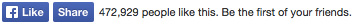

FBC:Like template tag
The Like button is the quickest way for people to share content with their friends. A single click on the Like button will 'like' pieces of content on the web and share them on Facebook. You can also display a Share button next to the Like button to let people add a personal message and customize who they share with.
You can integrate the Facebook Like button on your site. This is a social plugin, so users do NOT have to have synced accounts to "like" your site using the Facebook Like button. They just need to be logged into Facebook.
{exp:fbc:like}

Parameters
The following parameters are available for use:
href=
href="{url_title_path='news/article'}"
The absolute URL of the page that will be liked. For example:
- http://www.yoursite.com
- {site_url}
- {url_title_path='news/article'}
- http://www.site.com/{segment_2}/{segment_3}/
layout=
layout="standard"
Selects one of the different layouts that are available for the plugin. Width can be adjusted with the width parameter. Options are:
- standard (default) - displays social text to the right of the buttons and friends' profile photos below. Minimum width: 225 pixels. Default width: 450 pixels. Height: 35 pixels (without photos) or 80 pixels (with photos).
- button_count - displays the total number of likes to the right of the buttons. Minimum width: 90 pixels. Default width: 90 pixels. Height: 20 pixels.
- box_count - displays the total number of likes above the buttons. Minimum width: 55 pixels. Default width: 55 pixels. Height: 65 pixels.
- button - displays just the Like and Share buttons. Minimum width: 47 pixels. Default width: 47 pixels. Height: 20 pixels.
width=
width="450"
This parameter allows you to set the width (in pixels) of the Like button area.
share=
share="true"
This parameter allows you to specify whether to include a Share button with the Like button. Default is false.
show_faces=
show_faces="true"
This parameter allows you to specify whether to display profile photos below the button (standard layout only). Default is false.
action=
action="like"
This parameter lets you choose the verb to display on the button with predetermined Facebook options. Options are like or recommend.
colorscheme=
colorscheme="dark"
This parameter allows you to control the color scheme of the Like button with predetermined Facebook options. Options are light or dark.
Examples
Below is some example code on how to display the Facebook Like button on your site:
{exp:fbc:like
href="{site_url}"
share="true"
layout="standard"
width="450"
show_faces="true"
action="like"
colorscheme="light"
}
Below is how you would add the Facebook Like button in your page so that users can “like” entries on your site:
{exp:channel:entries require_entry="yes"}
<h2>{title}</h4>
<p>{body}</p>
{exp:fbc:like
href="{url_title_path='news/article'}"
share="true"
layout="standard"
width="450"
show_faces="true"
action="like"
colorscheme="light"
}
{/exp:channel:entries}